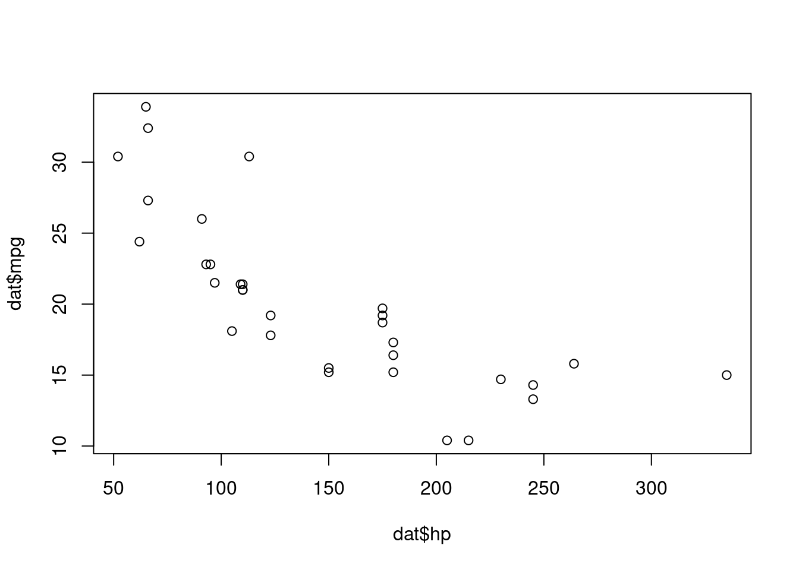
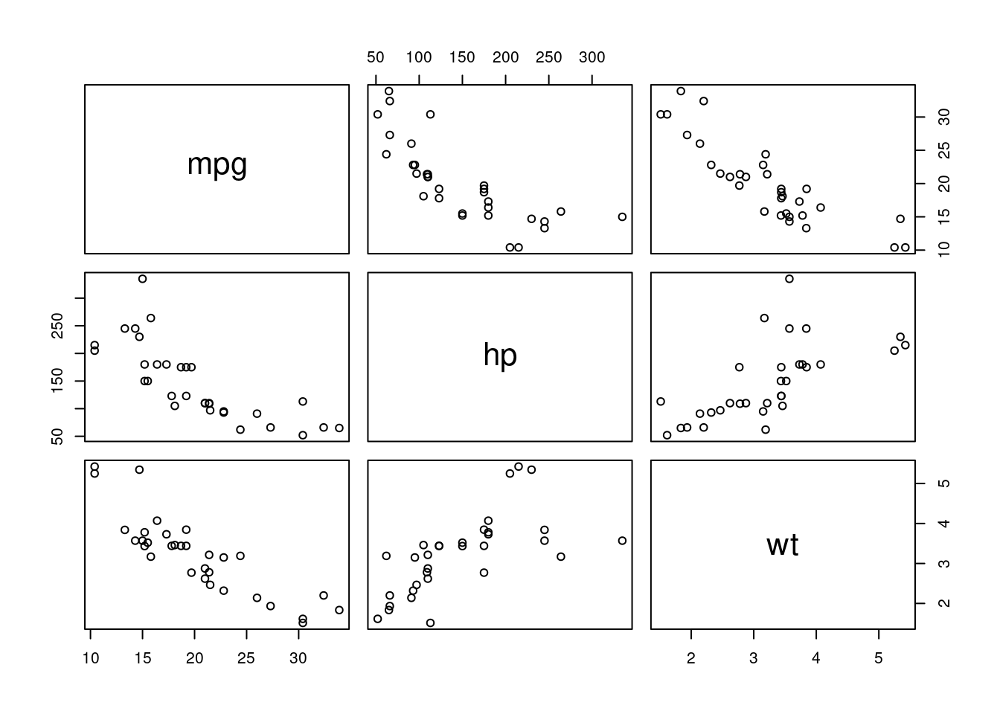
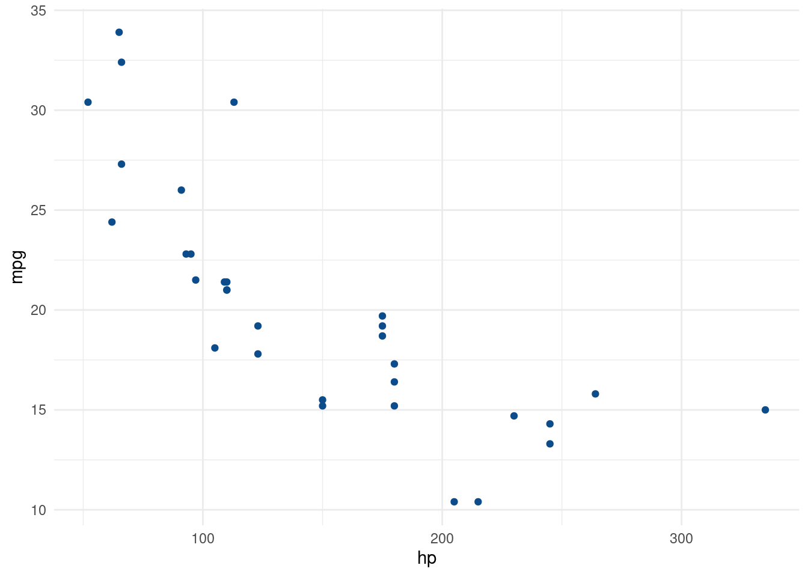

Capítulo 2 Estadística descriptiva
La estadística descriptiva es una rama de la estadística cuyo objetivo es resumir, describir y presentar una serie de valores o un conjunto de datos. Estas estadísticas pueden ser realmente útiles al analizar largas series de datos en las que resulte difícil reconocer algún patrón. En éste capítulo utilizaremos una muestra de datos sobre la altura (en metros) de una población de 100 picos de montañas:
1887, 1694, 1786, 1813, 1790, 1739, 1901, 1740, 1952, 1744, 1880, 1979, 1611, 1722, 1737, 1814, 1722, 1484, 1506, 1882, 1719, 1572, 1733, 1872, 1940, 1707, 1724, 1574, 1796, 1686, 1796, 1820, 1854, 1689, 1800, 1578, 1672, 1665, 1509, 1754, 1771, 1714, 1826, 1677, 1613, 1793, 1669, 1894, 1707, 1816, 1782, 1672, 1908, 1814, 1759, 1778, 1818, 1759, 1451, 1778, 1713, 1768, 1808, 1890, 1677, 1880, 1784, 1854, 1842, 1822, 1646, 1741, 1812, 1655, 1696, 1808, 1827, 1796, 1661, 1640, 1901, 1776, 1759, 1738, 1631, 1811, 1728, 1732, 1843, 1832, 1889, 1702, 1815, 1889, 1639, 1664, 1637, 1604, 1758, 1815, 1870, 1854, 1650, 1935, 1683, 1761, 1708, 1738, 1769, 1762, 1748, 1761, 1702, 1700, 1584, 1712, 1699, 2020, 1614, 1764, 1601, 1603, 1762, 1650, 1750, 1707, 1689, 1548, 1628, 1768, 1807, 1701, 1750, 1862, 1894, 1640, 1738, 1870, 1703, 1745, 1741, 1661, 1706, 1747, 1709, 1861, 1702, 1707, 1820, 1644, 1746, 1595, 1867, 1723, 1703, 1626, 1749, 1670, 1697, 1879, 1732, 1643, 1766, 1714, 1809, 1893, 1651, 1796, 1758, 1840, 1727, 1834, 1576, 1919, 1836, 1735, 1605, 1814, 1798, 1749, 1765, 1692, 1787, 1780, 1722, 1616, 1820, 1805, 1666, 1590, 1770, 1716, 1775, 1621, 1654, 1859, 1790, 1809, 1932, 1763, 1550, 1783, 1867, 1956, 1612, 1635, 1679, 1645, 1685, 1732, 1630, 1954, 1761, 1742, 1800, 1754, 1737, 1898, 1728, 1622, 1789, 1715, 1698, 1643, 1793, 1733, 1802, 1727, 1684, 1875, 1723, 1845, 1630, 1703, 1723, 1711, 1885, 1748, 1774, 1656, 1677, 1850, 1876, 1875, 1612, 1955, 1852, 1747, 1820, 1653, 1640, 1755, 1630, 1769, 1880, 1647, 1676, 1755, 1648, 1712, 1837, 1847, 1788, 1565, 1745, 1856, 1831, 1731, 1480, 1756, 1807, 1755, 1766, 1793, 1710, 1881, 1797, 1626, 1888, 1870, 1832, 1584, 1693, 1814, 1754, 1785, 1996, 1668, 1539, 1777, 1681, 1795, 1669, 1971, 1738, 1702, 1733, 1836, 1760, 1587, 1750, 1826, 1754, 1824, 1735, 1744, 1798, 1849, 1625, 1747, 1743, 1674, 1647, 1687, 1809, 1708, 1672, 1766, 1626, 1855, 1702, 1769, 1755, 1750, 1931, 1668, 1864, 1753, 1666, 1743, 1825, 1707, 1673, 1765, 1849, 1743, 1611, 1619, 1673, 1697, 1748, 1817, 1706, 1639, 1811, 1778, 1866, 1582, 1759, 1885, 1822, 1667, 1823, 1663, 1705, 1869, 1721, 1833, 1721, 1592, 1665, 1641, 1702, 1716, 1735, 1726, 1939, 1611, 1708, 1785, 1913, 1759, 1874, 1586, 1895, 1681, 1722, 1639, 1763, 1928, 1992, 1642, 1799, 1889, 1730, 1728, 1720, 1810, 1890, 1819, 1782, 1720, 1800, 1695, 1722, 1860, 1794, 1774, 1724, 1843, 1884, 1663, 1756, 1755, 1692, 1650, 1750, 1816, 1898, 1559, 1680, 1719, 1584, 1675, 1672, 1678, 1531, 1771, 1687, 1902, 1830, 1605, 1760, 1691, 1839, 1755, 1694, 1794, 1765, 1734, 1952, 1697, 1703, 1595, 1746, 1839, 1543, 1725, 1632, 1894, 1886, 1784, 1893, 1663, 1845, 1692, 1782, 1720, 1722, 1805, 1620, 1725, 1767, 1710, 1760, 1718, 1912, 1821, 2047, 1670, 1831, 1960, 1780, 1642, 1649, 1746, 1881, 1825, 1536, 1680, 1749, 1604, 1820, 1504, 1764, 1711, 1701, 1722, 1782, 1790, 1727, 1558, 1606, 1603, 1826, 1726, 1777, 1594, 1696, 1806, 1732, 1738, 1743, 1871, 1688, 1818, 1840, 1631, 1762, 1749, 1853, 1842, 1750, 1764, 1678, 1730, 1647, 1653, 1628, 1834, 1862, 1709, 1637, 1741, 1974, 1954, 1578, 1714, 1903, 1746, 1910, 1717, 1810, 1772, 2073, 1842, 1629, 1690, 1787, 1560, 1570, 1638, 1715, 1874, 1723, 1766, 1744, 1680, 1886, 1640, 1727, 1715, 1803, 1911, 1801, 1888, 1826, 1688, 1758, 1888, 1594, 1782, 1734, 1838, 1825, 1780, 1899, 1598, 1841, 1592, 1809, 1759, 1847, 1758, 1593, 1549, 1804, 1743, 1693, 1719, 1683, 1734, 1657, 1552, 1728, 1854, 1938, 1750, 1742, 1846, 1755, 1706, 1576, 1624, 1791, 1604, 1855, 1615, 1731, 1750, 1749, 1765, 1810, 1737, 1725, 1766, 1707, 1904, 1533, 1853, 1725, 1792, 1849, 1834, 1684, 1906, 1588, 1836, 1699, 1558, 1563, 1774, 1972, 1777, 1863, 1834, 1684, 1845, 1785, 1771, 1850, 1825, 1687, 1790, 1661, 1813, 1707, 1795, 1787, 1723, 1797, 1807, 1727, 1867, 1889, 1684, 1672, 1801, 1659, 1705, 1830, 1693, 1557, 1816, 1590, 1614, 1448, 1833, 1775, 1796, 1834, 1746, 1639, 1806, 1880, 1600, 1689, 1721, 1621, 1819, 1690, 1876, 1755, 1823, 1906, 1777, 1858, 1771, 1599, 1752, 1822, 1799, 1733, 1628, 1815, 1658, 1625, 1810, 1627, 1774, 1750, 1617, 1868, 1691, 1870, 1702, 1692, 1747, 1714, 1714, 1662, 1629, 1811, 1669, 1612, 1699, 1670, 1531, 1721, 1767, 1780, 1789, 1650, 1717, 1649, 1686, 1629, 1638, 1813, 1723, 1724, 1923, 1744, 1696, 1825, 1701, 1887, 1712, 1688, 1633, 1783, 1897, 1714, 1776, 1783, 1892, 1816, 1643, 1680, 1675, 1764, 1750, 1787, 1684, 1712, 1824, 1740, 1685, 1847, 1751, 1658, 1921, 1633, 1572, 1525, 1815, 1697, 1722, 1779, 1703, 1589, 1555, 1716, 1768, 1522, 1779, 1792, 1880, 1766, 1770, 1810, 1748, 1742, 1762, 1824, 1707, 1700, 1664, 1654, 1783, 1905, 1653, 1731, 1647, 1841, 1718, 1768, 1785, 1645, 1740, 1727, 1818, 1627, 1630, 1827, 1691, 1684, 1761, 1718, 1937, 1776, 1766, 1843, 1744, 1755, 1643, 1521, 1629, 1761, 1647, 1819, 1822, 1772, 1730, 1613, 1719, 1705, 1816, 1881, 1800, 1637, 1917, 1851, 1772, 1529, 1654, 1743, 1826, 1632, 2071, 1495, 1726, 1724, 1684, 1718, 1824, 1663, 1542, 1759, 1750, 1749, 1817, 1749, 1828, 1549, 1637, 1785, 1715, 1844, 1650, 1822, 1683, 1639, 1716, 1755, 1627, 1674, 1625, 1852, 1822, 1647, 1806, 1724, 1639, 1792, 1718, 1838, 1730, 1869, 1699, 1772, 1787, 1778, 1770, 1749, 1741, 1886, 1841, 1689, 1890, 1764, 1686, 1767, 1734, 1760, 1653, 1668, 1886, 1846, 1662, 1660, 1922, 1941, 1672, 1620, 2012, 1773, 1769, 1758, 1890, 1731, 1896, 1728, 1800, 1647, 1767, 1870, 1734, 1878, 2023, 1844, 1725, 1760, 1707, 1968, 1454, 1758, 1761, 1771, 1594, 1772, 1769, 1876, 1802, 1862, 1654, 1738, 1769, 1777, 1681, 1898, 1689, 1589, 1790, 1816, 1844, 1655, 1725, 1617, 1834, 1785, 1841, 1811, 1689, 1768, 1559, 1800, 1847, 1662, 1536, 1598, 1639, 1874, 1750, 1626, 1806, 1532, 1725, 1861, 1716, 1880, 1930, 1633, 1635, 1659, 1803, 1834, 1871, 1880, 1858, 1844, 1766, 1661, 1677, 1791, 1918, 1921, 1557, 1667, 1892, 1644, 1589, 1810, 1923, 1944, 1803, 1822, 1806, 1748, 1413, 1826, 1711, 1851, 1687, 1586, 1874, 1768, 2100, 1842, 1855, 1826, 1690, 1713, 1856, 1856, 1808, 1651, 1918, 1613 and 1707
De un primer vistazo es difícil (por no decir imposible) que podamos comprender los datos y tener una visión clara de las altitudes de este conjunto de cumbres. Las estadísticas descriptivas permiten resumir y así tener una mejor visión general de los datos. Por supuesto, al resumir los datos a través de una o varias medidas, inevitablemente se perderá parte de la información. Sin embargo, en muchos casos es mejor perder algo de información pero, a cambio, obtener una visión general. Podriamos decir que se trata de ganar perspectiva.
La estadística descriptiva es a menudo el primer paso y una parte importante en cualquier análisis estadístico. Permite comprobar la calidad de los datos detectando posibles valores atípicos (outliers), es decir, datos que parecen ser significativamente distintos del resto. También se puede utilizar estadística descriptiva para detectar errores de recopilación o codificación, determinar si están bien presentados, entre otras posibles aplicaciones.
Podemos distinguir dos típos básicos de estadísticos para describir un conjunto de datos: de centralidad y de dispersión. Habitualmente, ambos tipos de medidas se utilizan juntos para resumir los datos de la forma más concisa.
2.1 Tendencia central
Las medidas de tendencia central permiten ver “dónde” se ubican los datos, alrededor de qué valores. En otras palabras, las medidas de ubicación permiten comprender cuál es la tendencia central o la “posición” de los datos en su conjunto. Entre las estadísticas más habituales de este tipo podemos distinguir:
- Mínimo y máximo
- Media
- Mediana
- Primer cuartil
- Tercer cuartil
- Moda
2.1.1 Mínimo y máximo
Mínimo (\(min\)) y máximo (\(max\)) son simplemente los valores más bajo y más alto de la muestra. Dada la altitud (en metros) de una muestra de 6 cumbres:
1887, 1694, 1786, 1813, 1790 and 1739
El mínimo es 1693.5 m y el máximo es 1887.1 m. Estas dos estadísticas básicas dan una idea clara sobre el los extremos de la muestra y su cálculo con R es bastante sencillo:
## [1] 1693.5## [1] 1887.12.1.2 Media
La media o promedio, es probablemente la estadística más habitual. Da una idea de cuál es el valor medio, es decir, el valor central de los datos o, en otras palabras, su centro de gravedad. La media se encuentra sumando todos los valores y dividiendo esta suma por el número de observaciones (\(n\)):
\[Media =\overline{x}=\frac{\text{suma de todos los valores}}{\text{número de valores}} = \frac{1}{n}\sum^{n}_{i=1}x_i\] Dada nuestra muestra de 6 cumbres presentada anteriormente, la media es:
\[\overline{x} = \frac{1887 + 1694 + 1786 + 1813 + 1790 + 1739}{6}= 1784,833\]
En conclusión, el tamaño medio de nuestra muestra de 6 cumbres es 1785 m (redondeado a 2 decimales). El cálculo con R también resulta bastante sencillo:
## [1] 17852.1.3 Mediana
La mediana es otra medida de centralidad. La interpretación de la mediana es que hay tantas observaciones por debajo como por encima de la mediana. En otras palabras, el 50% de las observaciones se encuentran por debajo de la mediana y el 50% de las observaciones están por encima de la mediana.
La forma más fácil de calcular la mediana es primero ordenar los datos de menor a mayor (es decir, en orden ascendente) y luego tomar el punto medio como la mediana. A partir de los valores ordenados, para un número impar de observaciones, el punto medio es fácil de encontrar: es el valor con tantas observaciones abajo como arriba. Aún a partir de los valores ordenados, para un número par de observaciones, el punto medio está exactamente entre los dos valores medios. Formalmente, después de ordenar, la mediana es:
- si \(n\) (número de observaciones) es impar: \[mediana(x) = x_{\frac{n + 1}{2}}\]
- si \(n\) es par: \[mediana(x) = \frac{1}{2}\big(x_{\frac{n}{2}} + x_{\frac{n}{2} + 1} \big)\]
donde el subíndice de $ x $ denota la numeración de los datos ordenados. El cálculo en R es de nuevo bastante sencillo:
## [1] 1788.352.2 Primer y tercer cuartil
2.2.1 Moda
La moda de una serie es el valor que aparece con mayor frecuencia. En otras palabras, es el valor que tiene el mayor número de ocurrencias. Dada la altitud de 9 cimas:
1700, 1680, 1710, 1700, 1820, 1650, 1700, 1890 and 1670
La moda es 1700 porque es el valor más común con 3 apariciones. Todos los demás valores aparecen solo una vez. En conclusión, la mayoría de los adultos de esta muestra miden exactamente 1700 m de altitud.
Hay que tener en cuenta que es posible que una serie no tenga moda (p. Ej., 4, 7, 2 and 10) o más de una moda (p. Ej., 4, 2, 2, 8, 11 and 11). Los datos con dos modas a menudo se denominan bimodales y los datos con más de dos modos a menudo se denominan multimodales, a diferencia de las series con una moda, que se denominan unimodales.
A diferencia de las anteriores estadísticas (mínimo, máximo, media, mediana, primer y tercer cuartil) que solo se pueden calcular para variables cuantitativas, la moda se puede calcular para variables cuantitativas y cualitativas. Dado el uso del suelo de los 9 lugares presentados anteriormente:
forestal, forestal, forestal, forestal, agrícola, agrícola, agrícola, forestal and urbano
La moda es “forestal”, por lo que la mayoría de las lugares de esta muestra son de uso forestal (como es común a partir de ciertas altitudes).
2.3 Dispersión
2.3.1 Rango
El rango es la diferencia entre el máximo y el mínimo:
\[rango = max - min\]
Dada nuestra muestra de altitudes de seis cumbres:
1887, 1694, 1786, 1813, 1790 and 1739
El rango es 1887.1 \(-\) 1693.5 \(=\) 193.6 cm. El rango es muy sencillo de calcular y en algunos casos puede dar una buena idea de lo que podemos esperar de un conjunto de datos. En R se puede utilizar la función range
## [1] 1693.5 1887.1No obstante, esta métrica no da ninguna información de la distribución interna del resto de medidas.
2.3.2 Desviación estándard
2.3.3 Varianza
2.3.4 Coeficiente de variación
2.4 Correlación
Las correlaciones entre variables juegan un papel importante en un análisis descriptivo. Una correlación mide la relación entre dos variables, es decir, cómo están vinculadas entre sí. En este sentido, una correlación permite saber si dos variables evolucionan en la misma dirección, en sentido contrario y si son independientes.
En este artículo, muestro cómo calcular coeficientes de correlación, cómo realizar pruebas de correlación y cómo visualizar correlaciones entre variables usando R.
La correlación generalmente se calcula en dos variables cuantitativas, pero también se puede calcular en dos variables cualitativas ordinales (ver prueba de independencia de chi-cuadrado).
2.4.1 Datos
En este artículo, usaremos el conjunto de datos mtcars. Este conjunto de datos viene cargado por defecto en R, de modo que se utiliza en numerosas demostraciones.
## mpg cyl disp hp drat wt qsec vs am gear carb
## Mazda RX4 21.0 6 160 110 3.90 2.620 16.46 0 1 4 4
## Mazda RX4 Wag 21.0 6 160 110 3.90 2.875 17.02 0 1 4 4
## Datsun 710 22.8 4 108 93 3.85 2.320 18.61 1 1 4 1
## Hornet 4 Drive 21.4 6 258 110 3.08 3.215 19.44 1 0 3 1
## Hornet Sportabout 18.7 8 360 175 3.15 3.440 17.02 0 0 3 2Las variables vs yam son variables categóricas, por lo que se eliminan para este artículo:
# Eliminar las variables vs y am
library(tidyverse)
dat <- mtcars %>%
select(-vs, -am)
# mostrar las primeras cinco filas
head(dat, 5)## mpg cyl disp hp drat wt qsec gear carb
## Mazda RX4 21.0 6 160 110 3.90 2.620 16.46 4 4
## Mazda RX4 Wag 21.0 6 160 110 3.90 2.875 17.02 4 4
## Datsun 710 22.8 4 108 93 3.85 2.320 18.61 4 1
## Hornet 4 Drive 21.4 6 258 110 3.08 3.215 19.44 3 1
## Hornet Sportabout 18.7 8 360 175 3.15 3.440 17.02 3 22.4.2 Coeficiente de correlación
La correlación entre 2 variables se calcula con la función cor(). Supón que queremos calcular la correlación entre caballos de potencia (hp) y millas por galón (mpg):
## [1] -0.7761684Hay que fijarse en que la correlación entre las variables X e Y es igual a la correlación entre las variables Y y X, por lo que el orden de las variables en la función cor() no importa.
La función cor() calcula por defecto la correlación de Pearson, por lo que si se quiere calcular la correlación por otro método, se puede agregar el argumento method =" spearman " a la función cor():
## [1] -0.8946646Hay varios métodos de correlación (se puede consultar la ayuda de la la función para saber más ?cor):
- Pearson se usa a menudo para variables cuantitativas continuas que tienen una relación lineal.
- Spearman (es similar a Pearson pero se basa en los valores ordenados para cada variable en lugar de en los datos brutos) se usa a menudo para evaluar relaciones que involucran variables cualitativas ordinales en las que la relación sea parcialmente lineal.
- Kendall se calcula a partir del número de pares concordantes y discordantes, se utiliza a menudo para variables ordinales cualitativas.
La función cor () también permite calcular correlaciones para varios pares de variables a la vez:
## mpg cyl disp hp drat wt qsec gear carb
## mpg 1.00 -0.85 -0.85 -0.78 0.68 -0.87 0.42 0.48 -0.55
## cyl -0.85 1.00 0.90 0.83 -0.70 0.78 -0.59 -0.49 0.53
## disp -0.85 0.90 1.00 0.79 -0.71 0.89 -0.43 -0.56 0.39
## hp -0.78 0.83 0.79 1.00 -0.45 0.66 -0.71 -0.13 0.75
## drat 0.68 -0.70 -0.71 -0.45 1.00 -0.71 0.09 0.70 -0.09
## wt -0.87 0.78 0.89 0.66 -0.71 1.00 -0.17 -0.58 0.43
## qsec 0.42 -0.59 -0.43 -0.71 0.09 -0.17 1.00 -0.21 -0.66
## gear 0.48 -0.49 -0.56 -0.13 0.70 -0.58 -0.21 1.00 0.27
## carb -0.55 0.53 0.39 0.75 -0.09 0.43 -0.66 0.27 1.00La correlación varía de -1 a 1, de modo que el signo nos indica la dirección de la relación (aumentan a la vez o son opuestas) y el valor nos indica la fuerza de la relación (más fuerte cuanto más alejado de 0).
Una correlación negativa implica que las dos variables consideradas varían en direcciones opuestas, es decir, si una variable aumenta la otra disminuye y viceversa. Por otro lado, una correlación positiva implica que las dos variables consideradas varían en la misma dirección, es decir, si una variable aumenta, la otra aumenta y si una disminuye, la otra también disminuye.
En cuanto a la fuerza de la relación: cuanto más extremo es el coeficiente de correlación (cuanto más cerca de -1 o 1), más fuerte es la relación. Esto también significa que una correlación cercana a 0 indica que las dos variables son independientes, es decir, a medida que una variable aumenta, no hay tendencia en la otra variable a disminuir o aumentar.
Por ejemplo, la correlación de Pearson entre caballos de potencia (hp) y millas por galón (mpg) encontrada es -0.78, lo que significa que las 2 variables varían en dirección opuesta. Esto tiene sentido, los automoviles con más caballos de potencia suelen a consumir más combustible (hacen menos millas con el mismo combustible que los automóviles más potentes). Por el contrario, de la matriz de correlación vemos que la correlación entre millas por galón (mpg) y el tiempo para conducir un cuarto de milla (qsec) es 0.42, lo que significa que los automóviles rápidos (con un menor qsec) tienden a tener un peor rendimiento por galón (bajo mpg). De nuevo, esto tiene sentido, ya que los coches rápidos tienden a consumir más combustible.
2.4.3 Test de correlación
Volver una vez leída la sección sobre test de hipótesis.
Hay que tener en cuenta que el valor p se basa en el coeficiente de correlación y en el tamaño de la muestra. Cuanto mayor sea el tamaño de la muestra y más extrema será la correlación (más cercana a -1 o 1). Con un tamaño de muestra pequeño, es posible obtener una correlación relativamente grande en la muestra (según el coeficiente de correlación), pero aún así encontrar una correlación no significativamente diferente de 0 en la población (según la prueba de correlación). Por este motivo, se recomienda realizar siempre un test de correlación antes de interpretar un coeficiente de correlación para evitar conclusiones erróneas.
A diferencia de una matriz de correlación que indica los coeficientes de correlación entre algunos pares de variables en la muestra, se utiliza un test de correlación para probar si la correlación (\(\rho\)) entre dos variables es significativamente diferente de 0 o no en la población.
En realidad, un coeficiente de correlación diferente de 0 en la muestra no significa que la correlación sea significativamente diferente de 0 en la población. Esto debe probarse con un test de hipótesis.
Las hipótesis (nula y alternativa) para el test de correlación son las siguientes:
- \(H_0\): \(\rho = 0\) (si no existe una relación lineal entre las dos variables)
- \(H_1\): \(\rho\ne 0\) (si existe una relación lineal entre las dos variables)
A través de esta prueba de correlación, lo que realmente estamos probando es si:
- La muestra contiene evidencia suficiente para rechazar la hipótesis nula y concluir que el coeficiente de correlación no es igual a 0, por lo que la relación existe en la población.
- La muestra no contiene suficiente evidencia de que el coeficiente de correlación no sea igual a 0, por lo que en este caso no rechazamos la hipótesis nula de no-relación entre las variables de la población.
Supongamos que queremos probar si el ratio del eje trasero (drat) está correlacionado con el tiempo necesario para conducir 1/4 de milla (qsec):
##
## Pearson's product-moment correlation
##
## data: dat$drat and dat$qsec
## t = 0.50164, df = 30, p-value = 0.6196
## alternative hypothesis: true correlation is not equal to 0
## 95 percent confidence interval:
## -0.265947 0.426340
## sample estimates:
## cor
## 0.09120476El p-valor de la prueba de correlación entre estas 2 variables es 0.62. Al nivel de significancia del 5%, no se rechaza la hipótesis nula de no correlación. Por lo tanto, concluimos que no rechazamos la hipótesis de que no existe una relación lineal entre las 2 variables.1
Esta prueba demuestra que incluso si el coeficiente de correlación es diferente de 0 (la correlación es 0.09 en la muestra), en realidad no es significativamente diferente de 0 en la población.
2.4.4 Visualizando correlaciones
Una buena forma de visualizar una correlación entre 2 variables es mediante un diagrama de dispersión. Por ejemplo:

Para visualizar la relación entre más de 2 variablesse puede usar la función pair (). En este caso limitamos el ejemplo a tres variables:

Por otra parte, existen numerosas librerías de R que permiten generar este tipo de gráficos con distintas opciones. Por ejemplo con ggplot2:
# Diagrama de dispersión con ggplot2
library(ggplot2)
ggplot(dat) +
aes(x = hp, y = mpg) +
geom_point(colour = "#0c4c8a") +
theme_minimal()
O representaciones más modernas como con la librería corrplot:
# improved correlation matrix
library(corrplot)
corrplot(cor(dat),
method = "number",
type = "upper" # show only upper side
)
2.5 Ejercicios
- Estableced en clase un debate sobre variables de carácter territorial que consideréis que pueden estar correlacionadas y en qué medida.
Es importante recordar que probamos una relación lineal entre las dos variables ya que usamos la correlación de Pearson. Puede darse el caso de que exista una relación entre las dos variables en la población, pero esta relación puede no ser lineal.↩︎